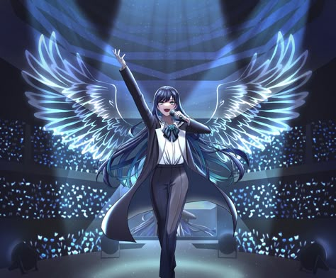

Marzo 2026
Nuevo álbum lanzado
Ado lanza un nuevo álbum con un estilo más intenso y experimental, sorprendiendo a todos sus fans con matices vocales nunca antes vistos.
Ver más
Febrero 2026
Participación en anime
Ado vuelve a colaborar en un proyecto de anime masivo con nuevas canciones que prometen dominar las listas de éxitos este año.
Leer más
Enero 2026
Gira internacional "Wish"
Se anuncian las fechas oficiales para los próximos conciertos en Latinoamérica y Europa. ¡No te quedes sin tu entrada!
Ver fechasDiciembre 2025
El impacto de USSEEWA
Analizamos cómo una canción rompió los esquemas de la sociedad japonesa y se volvió un himno viral.
Ver video